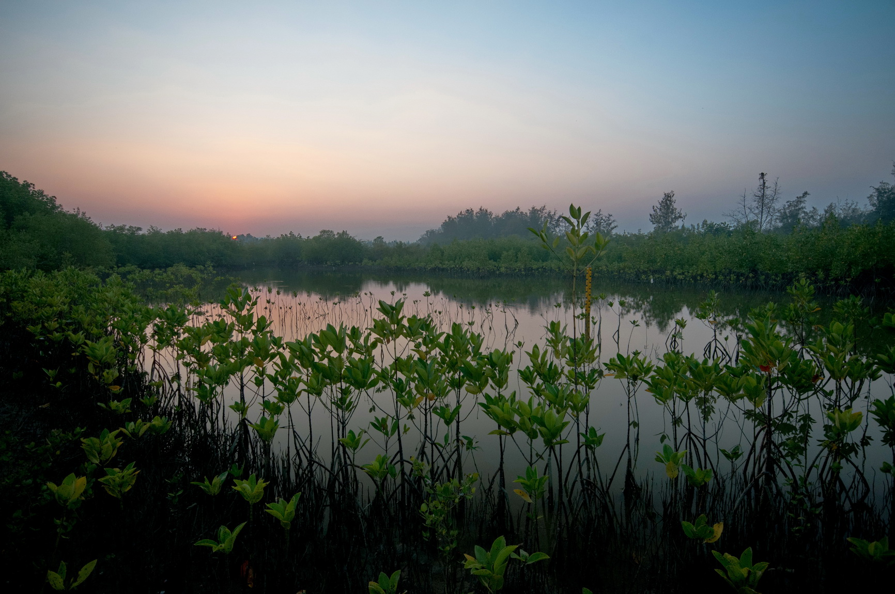
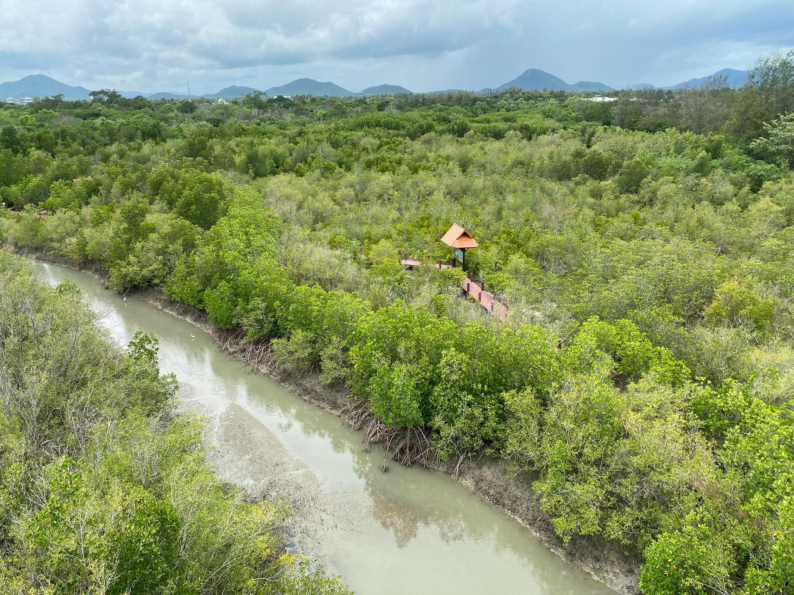
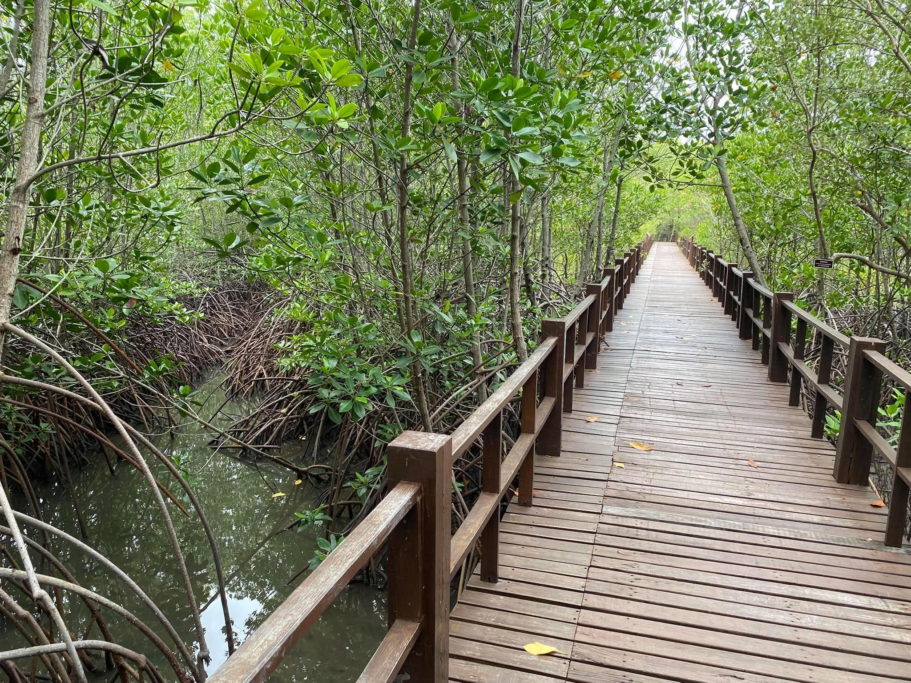
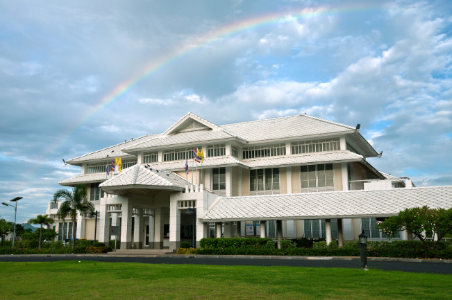
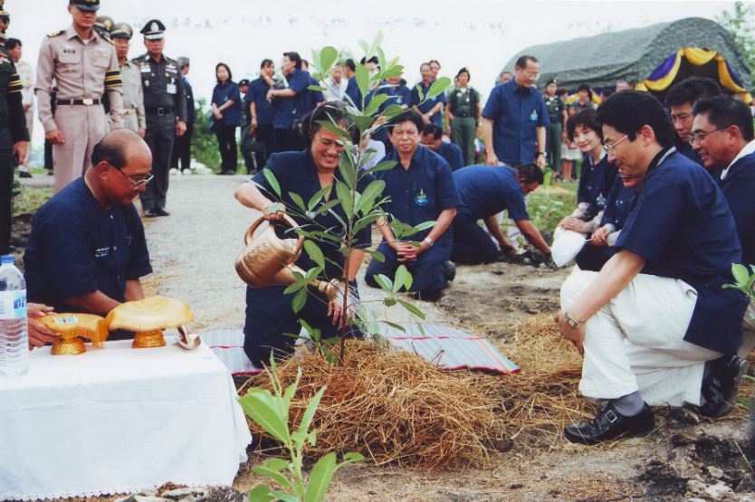
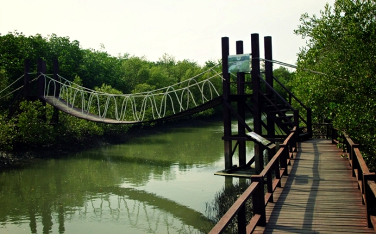

01 · COASTAL FORESTระบบนิเวศชายฝั่งป่าชายเลน ป่าชายหาด และป่าบก



SIRINDHORN · CHA-AM, PHETCHABURI
สวนป่าชายเลนทูลกระหม่อมเรียนรู้ระบบนิเวศจากพื้นที่จริง
01 / 03
A LIVING CLASSROOM · EST. 1994ธรรมชาติ
ธรรมชาติ
คือห้องเรียน
ที่มีชีวิต
ชวนออกเดินทางสู่พื้นที่ที่ธรรมชาติและการเรียนรู้มาบรรจบกัน ตั้งแต่ป่าชายเลนและชีวิตชายฝั่ง ไปจนถึงการใช้พลังงานอย่างรู้คุณค่า
ค่ายพระรามหก · อำเภอชะอำ · จังหวัดเพชรบุรี

PARK HIGHLIGHTS
พื้นที่เดียวที่ชวนมองธรรมชาติ
ผ่านหลายมุมการเรียนรู้
02 · BIODIVERSITYความหลากหลายทางชีวภาพพืช สัตว์ และถิ่นอาศัยที่เชื่อมโยงกัน
03 · SUSTAINABLE ENERGYพลังงานและสิ่งแวดล้อมเรียนรู้แนวทางใช้ทรัพยากรอย่างรู้คุณค่า
ABOUT THE PARK · A STORY OF RESTORATIONจากพระราชดำริ
จากพระราชดำริ
สู่ห้องเรียนธรรมชาติ

14 · 17 สิงหาคม 2537
เริ่มฟื้นฟูป่าชายเลนจากพื้นที่จริง
เมื่อวันที่ 14 สิงหาคม 2537 ณ พระราชนิเวศน์มฤคทายวัน มีพระราชดำริกับนายสุเมธ ตันติเวชกุล เลขาธิการ กปร. ในขณะนั้น ให้จัดหาพื้นที่ทดลองปลูกและฟื้นฟูป่าชายเลน เพื่อให้ระบบนิเวศกลับคืนสู่ธรรมชาติ ต่อมาในวันที่ 17 สิงหาคม ได้เสด็จพระราชดำเนินทรงปลูกพันธุ์ไม้ชายเลนที่คลองบางตราใหญ่และคลองบางตราน้อย พร้อมพระราชทานแนวทางให้หาวิธีดูแลต้นไม้ที่ปลูกให้รอด และปลูกป่าชายเลนต่อในพื้นที่ที่เหลือของทั้งสองคลอง
จากจุดเริ่มต้นนี้ การฟื้นฟูจึงมุ่งทั้งการปลูกป่าและการดูแลให้ระบบนิเวศชายฝั่งกลับมาเกื้อหนุนชีวิต
02
2 เมษายน 2541
ฟื้นดินเสื่อมโทรมให้กลับเป็นพื้นที่สีเขียว
เมื่อเสด็จพระราชดำเนินมาทรงจักรยานและออกกำลังพระวรกายบริเวณค่ายพระรามหก ได้ทอดพระเนตรพื้นที่รกร้างและดินมีคราบเกลือ จึงพระราชทานพระราชดำริแก่ท่านผู้หญิงบุตรี วีระไวทยะ ให้ฟื้นฟูดินเสื่อมโทรมให้เป็นพื้นที่สีเขียวที่งดงามตามธรรมชาติ ใช้เป็นพื้นที่นันทนาการและแหล่งศึกษาระบบนิเวศหลังการฟื้นฟู

03
พ.ศ. 2543
ร่วมก่อตั้งอุทยานสิ่งแวดล้อมนานาชาติ
กองบัญชาการตำรวจตระเวนชายแดน ศูนย์ศึกษาการพัฒนาห้วยทรายอันเนื่องมาจากพระราชดำริ และมูลนิธิพระราชนิเวศน์มฤคทายวัน ในพระอุปถัมภ์ฯ ร่วมกันจัดตั้ง “อุทยานสิ่งแวดล้อมนานาชาติ” ณ ค่ายพระรามหก อำเภอชะอำ จังหวัดเพชรบุรี เพื่อน้อมเกล้าฯ ถวายในวโรกาสเจริญพระชนมายุครบ 4 รอบในปี 2546 และสืบสานแนวพระราชดำริกับพระราชกรณียกิจ ให้เป็นเสมือนพิพิธภัณฑ์ธรรมชาติที่มีชีวิต
ในวโรกาสเจริญพระชนมายุครบ 4 รอบในปี 2546 ได้กำหนดแนวทางดำเนินงานตามพระราชดำริและพระราชกรณียกิจ เพื่อให้อุทยานเป็นเสมือนพิพิธภัณฑ์ธรรมชาติที่มีชีวิต มุ่งเผยแพร่พระเกียรติคุณด้านการอนุรักษ์ธรรมชาติ สิ่งแวดล้อม ประวัติศาสตร์ และศิลปวัฒนธรรม และเป็นแหล่งศึกษาป่าชายเลน ป่าชายหาด ป่าเบญจพรรณ ตลอดจนถิ่นอาศัยของสัตว์นานาชนิด

04
13 พฤศจิกายน 2543
พระราชทานนาม “อุทยานสิ่งแวดล้อมนานาชาติสิรินธร”
ทรงพระกรุณาโปรดเกล้าฯ พระราชทานพระนามเป็นชื่ออุทยาน และพระราชทานพระราชานุญาตให้อัญเชิญอักษรพระนามาภิไธย “สธ” ประดับตราสัญลักษณ์ของอุทยาน

05
19 กรกฎาคม 2551
เปิดอุทยานสิ่งแวดล้อมนานาชาติสิรินธรอย่างเป็นทางการ
การเปิดอุทยานอย่างเป็นทางการเป็นอีกก้าวสำคัญของการสืบสานแนวพระราชดำริ ให้พื้นที่ฟื้นฟูธรรมชาติแห่งนี้เป็นแหล่งเรียนรู้ด้านสิ่งแวดล้อมและระบบนิเวศสำหรับชุมชนและผู้มาเยือน

06
28 พฤษภาคม 2555
สานต่อภารกิจภายใต้มูลนิธิในพระราชูปถัมภ์
อุทยานบริหารจัดการโดยมูลนิธิอุทยานสิ่งแวดล้อมนานาชาติสิรินธร ในพระราชูปถัมภ์ฯ ซึ่งมีนายสุเมธ ตันติเวชกุล เป็นประธานกรรมการก่อตั้ง และได้รับพระราชานุญาตให้อยู่ในพระราชูปถัมภ์ตั้งแต่วันที่ 28 พฤษภาคม 2555
มูลนิธิสืบสานแนวพระราชดำริ พัฒนาอุทยานให้เป็นแหล่งเรียนรู้และฟื้นฟูธรรมชาติ ตลอดจนส่งเสริมการท่องเที่ยวเชิงนิเวศที่มีคุณค่าต่อชุมชนและผู้มาเยือน
